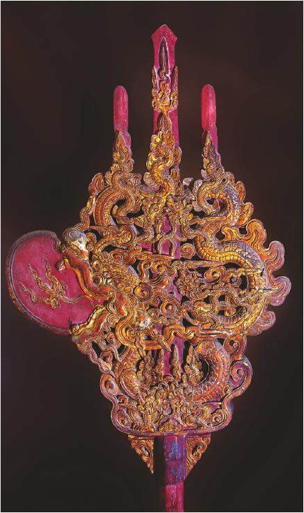

CỐ ĐÔ HOA LƯ
Ceremonial axes of Đinh Temple


This artifact, known as the Phủ Việt (ceremonial battle-axe), was recognized as a National Treasure by decision of the Prime Minister in 2020.
The name Phủ Việt comes from a type of axe once used in battle. But through the skill and creativity of the artisan, this weapon was elevated into a sacred object: the supreme symbol of divine authority, royal power, and a sense of return to the nation’s roots.
The Phủ Việt set at the Temple of King Đinh Tiên Hoàng consists of two pieces, each meticulously crafted from precious wood, lacquered red and gilded. Each piece is more than 3 meters long and weighs up to 45 kilograms, with an octagonal cross-section.
What makes this Phủ Việt set one of a kind is its exceptionally fine and elaborate carving, which strongly bears the mark of the Later Lê artistic style (17th century).
The head of the Phủ Việt is finely carved with a mother dragon and five young dragons, a motif of deep symbolic value. In Eastern culture, the dragon is a sacred creature that symbolizes strength, authority, nobility, and prosperity. The image of the mother dragon with her young, together with the flame-blade motifs (đao lửa), evokes community bonds, sacred maternal love, and the continuity of generations, and also radiates the nation’s resilient martial spirit. From a weapon with a military function, in the skilled hands of the artisans, the Phủ Việt was transformed into a work of wood sculpture of high aesthetic value, a harmonious blend of history, art, and belief in the spiritual life of the Vietnamese people.
Having survived for more than four centuries, the Phủ Việt set has become an inseparable part of the cultural and spiritual space of the Temple of King Đinh Tiên Hoàng. It is not only a representative testament to the creativity and the supreme woodcarving skill of 17th-century artisans, but also a precious source of material for research into history, fine arts, and traditional belief. Through this treasure, each of us who steps here feels all the more reverence and boundless pride toward the heroes and men of talent who built and defended the nation.